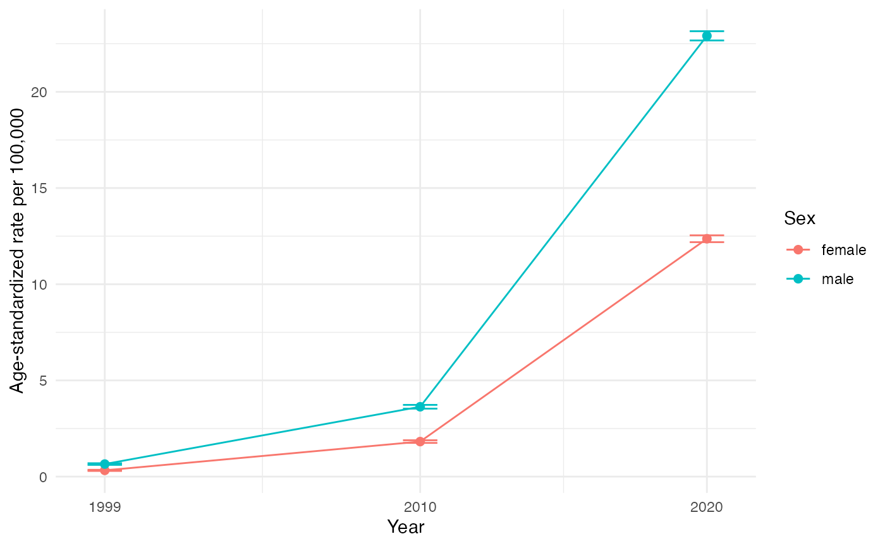

Age-standardized synthetic-opioid death rates by sex
Source:vignettes/age-standardized-rates.Rmd
age-standardized-rates.RmdThis vignette turns multiple-cause-of-death (MCOD) records into an
age-standardized synthetic-opioid death rate by sex,
for US residents only, illustrated with 1999, 2010, and 2020. Synthetic
opioids other than methadone are ICD-10 T40.4, flagged
by flag_opioid_types() as other_synth_present.
T40.4 is the CDC-standard proxy for illicitly manufactured fentanyl, but
it is a proxy – it also captures tramadol, U-47700, and other
synthetics. Its composition shifts over time: illicit fentanyl only came
to dominate T40.4 around 2013-2014 (Ciccarone’s “third wave”), so
early-series T40.4 deaths are largely pharmaceutical fentanyl and
tramadol, not the illicit-fentanyl phenomenon of recent years. Read a
long T40.4 series as “synthetic opioids,” not “fentanyl,” throughout.
Denominators are the SEER bridged-race estimates
(race_scheme = "bridged"), one internally consistent race
series, so the comparison is not confounded by a change in how the
Census classifies people by race.
All death data below are small inline synthetic counts, clearly labelled illustrative; only the bundled population denominators are real. No chunk reads a restricted record, an external file, or the network.
This vignette picks up where flagging leaves off. The Classifying
overdose deaths vignette
(vignette("classifying-overdose-deaths")) builds the
drug_death/opioid_death flags used here and is
the place to start if the flag steps below are unfamiliar. For the full
record-to-analysis workflow, begin with
vignette("getting-started").
From records to a fentanyl flag
Start with a handful of illustrative record-level rows. Real MCOD
data carry restatus (residency) and ucod
(underlying cause) as raw columns, plus a derived
f_records_all – the space-joined multiple-cause T-code
string that the flag helpers key on (f_records_all is
produced by unite_records(); see
vignette("getting-started")).
records <- data.frame(
year = 2020L,
restatus = c(1L, 1L, 4L, 2L, 3L),
ucod = c("X42", "X44", "X42", "I250", "X42"),
f_records_all = c("T404 T519", "T404", "T404", "I250", "T400"),
age = c(35L, 40L, 55L, 60L, 25L),
sex = c("male", "female", "male", "male", "female"),
stringsAsFactors = FALSE
)
records
#> year restatus ucod f_records_all age sex
#> 1 2020 1 X42 T404 T519 35 male
#> 2 2020 1 X44 T404 40 female
#> 3 2020 4 X42 T404 55 male
#> 4 2020 2 I250 I250 60 male
#> 5 2020 3 X42 T400 25 femalesubset_residents() keeps restatus %in% 1:3
and drops the column. The non-resident row (restatus == 4)
is removed.
resid <- subset_residents(records)
resid
#> year ucod f_records_all age sex
#> 1 2020 X42 T404 T519 35 male
#> 2 2020 X44 T404 40 female
#> 3 2020 I250 I250 60 male
#> 4 2020 X42 T400 25 femaleflag_drug_deaths() adds drug_death under
the ISW7 (Injury Surveillance Workgroup) rule – a drug ucod
and a T-code. The cardiac death (I250) is
not a drug death.
resid <- flag_drug_deaths(resid, year = 2020)
resid[, c("ucod", "f_records_all", "drug_death")]
#> ucod f_records_all drug_death
#> 1 X42 T404 T519 1
#> 2 X44 T404 1
#> 3 I250 I250 0
#> 4 X42 T400 1flag_opioid_deaths() adds opioid_death.
flag_opioid_types() then splits the opioid into type flags;
other_synth_present is the T40.4 fentanyl proxy. Note the
T40.0-only row (opium, T40.0) is an opioid death but
not a synthetic-opioid death.
resid <- resid |>
flag_opioid_deaths(year = 2020) |>
flag_opioid_types(year = 2020)
resid[, c("f_records_all", "opioid_death", "other_synth_present")]
#> f_records_all opioid_death other_synth_present
#> 1 T404 T519 1 1
#> 2 T404 1 1
#> 3 I250 0 0
#> 4 T400 1 0The fentanyl-proxy deaths are the rows with
other_synth_present == 1:
resid[resid$other_synth_present == 1, c("ucod", "f_records_all", "age", "sex")]
#> ucod f_records_all age sex
#> 1 X42 T404 T519 35 male
#> 2 X44 T404 40 femaleAggregate to counts, then rate
In practice you flag every record this way, then aggregate the
fentanyl deaths to year x age x sex counts before computing
rates. We build that aggregated frame directly here. These
counts are illustrative – a deterministic Poisson draw tuned to
rise steeply over time (the real synthetic-opioid surge) and to run
higher for males. age is the 5-year bin start (0, 5, …,
85); sex is "male"/"female".
counts <- expand.grid(
year = c(1999L, 2010L, 2020L),
age = seq(0L, 85L, 5L),
sex = c("male", "female"),
stringsAsFactors = FALSE
)
age_weight <- c(0, 0, .02, .2, .6, .9, 1, .95, .85, .7, .5, .3, .15, .07, .03,
.01, 0, 0)
names(age_weight) <- seq(0, 85, 5)
year_factor <- c("1999" = 75, "2010" = 450, "2020" = 3000) # ~40x rise
sex_factor <- c("male" = 1.9, "female" = 1)
lambda <- year_factor[as.character(counts$year)] *
sex_factor[counts$sex] *
age_weight[as.character(counts$age)]
set.seed(42)
counts$deaths <- rpois(nrow(counts), lambda)
counts <- counts[order(counts$year, counts$sex, counts$age), ]
head(counts)
#> year age sex deaths
#> 55 1999 0 female 0
#> 58 1999 5 female 0
#> 61 1999 10 female 1
#> 64 1999 15 female 16
#> 67 1999 20 female 49
#> 70 1999 25 female 68add_pop_counts(race_scheme = "bridged") joins the SEER
bridged-race denominator and adds pop. Race is not a
by_var, so pop is the all-race total for each
year x age x sex cell; bridged requires
year in by_vars. With no
state_fips/county_fips, the national
denominator is used automatically.
counts <- add_pop_counts(counts, by_vars = c("year", "age", "sex"),
race_scheme = "bridged")
head(counts[, c("year", "age", "sex", "deaths", "pop")])
#> year age sex deaths pop
#> 1 1999 0 female 0 9345737
#> 2 1999 5 female 0 10052618
#> 3 1999 10 female 1 9855664
#> 4 1999 15 female 16 9761569
#> 5 1999 20 female 49 9098615
#> 6 1999 25 female 68 9695967add_std_pop() adds the US 2000 standard population
(pop_std) and its unit weights (unit_w,
summing to 1 across the 18 five-year age groups). s204 is
narcan’s code for that standard population in 18 five-year age bins (the
default std_cat); see ?add_std_pop for
single-year alternatives, which must match your age binning. Other
standard populations are available too (e.g., the Segi world standard
and alternative age binnings) – see ?add_std_pop and the
std_pops dataset for the full list of std_cat
codes.
counts <- add_std_pop(counts, std_cat = "s204", by_vars = "age")
head(counts[, c("age", "pop_std", "unit_w")])
#> age pop_std unit_w
#> 1 0 18986520 0.06913399
#> 2 5 19919840 0.07253241
#> 3 10 20056779 0.07303103
#> 4 15 19819518 0.07216712
#> 5 20 18257225 0.06647847
#> 6 25 17722067 0.06452985calc_asrate_var() adds the age-specific
rate (fentanyl_rate, per 100,000) and its Poisson variance
(fentanyl_var) for each age-sex-year cell – the rate
before standardization. Here are the 2020 male age-specific
rates, which peak in early adulthood (~age 30) and decline
thereafter:
counts <- calc_asrate_var(counts, new_name = fentanyl, death_col = deaths,
pop_col = pop)
subset(counts, year == 2020L & sex == "male",
select = c("age", "deaths", "pop", "fentanyl_rate"))
#> age deaths pop fentanyl_rate
#> 91 0 0 9863371 0.000000
#> 92 5 0 10412874 0.000000
#> 93 10 124 11110579 1.116053
#> 94 15 1136 11011250 10.316722
#> 95 20 3416 10951879 31.190995
#> 96 25 5224 11580586 45.109980
#> 97 30 5736 11573651 49.560852
#> 98 35 5392 11228127 48.022257
#> 99 40 4869 10370561 46.950208
#> 100 45 3878 10159468 38.171290
#> 101 50 2887 10370613 27.838277
#> 102 55 1680 10855282 15.476337
#> 103 60 845 10225137 8.263948
#> 104 65 414 8553891 4.839903
#> 105 70 176 6807350 2.585441
#> 106 75 67 4358651 1.537173
#> 107 80 0 2629908 0.000000
#> 108 85 0 2180470 0.000000calc_stdrate_var() collapses the age bins into one
age-standardized rate per year x sex, reweighting each
stratum to the US 2000 age structure. Pass the grouping columns
(year, sex) explicitly – they are not added
automatically.
std <- calc_stdrate_var(counts, fentanyl_rate, fentanyl_var, year, sex)
as.data.frame(std)
#> year sex fentanyl_rate fentanyl_var
#> 1 1999 female 0.3249014 0.0002302396
#> 2 1999 male 0.6528509 0.0004680040
#> 3 2010 female 1.8209196 0.0012445350
#> 4 2010 male 3.6311987 0.0024933476
#> 5 2020 female 12.3640330 0.0082252947
#> 6 2020 male 22.9116102 0.0150032081Reading the result
In these illustrative data the male rate runs roughly twice the
female rate in every year, and both rise about 35-40 fold from 1999 to
2020 – the shape of the real synthetic-opioid epidemic, if not the exact
levels. A 95% confidence interval follows from the returned variance as
fentanyl_rate +/- 1.96 * sqrt(fentanyl_var):
std <- as.data.frame(std)
std$lower <- std$fentanyl_rate - 1.96 * sqrt(std$fentanyl_var)
std$upper <- std$fentanyl_rate + 1.96 * sqrt(std$fentanyl_var)
std[, c("year", "sex", "fentanyl_rate", "lower", "upper")]
#> year sex fentanyl_rate lower upper
#> 1 1999 female 0.3249014 0.2951610 0.3546417
#> 2 1999 male 0.6528509 0.6104495 0.6952524
#> 3 2010 female 1.8209196 1.7517748 1.8900644
#> 4 2010 male 3.6311987 3.5333292 3.7290682
#> 5 2020 female 12.3640330 12.1862739 12.5417921
#> 6 2020 male 22.9116102 22.6715346 23.1516859This normal-approximation (Wald) interval is fine for well-populated cells but under-covers when death counts are small – it can even return a negative lower bound. For sparse strata (sub-national rates, or fine demographic cells; NCHS treats a rate from fewer than 20 deaths as unreliable), use a gamma-based interval (Fay and Feuer, Stat Med 1997) rather than this Wald form.
Because both sexes are standardized to the same US 2000 age structure, the male-female gap reflects differences in death rates, not in age composition – that is the point of age standardization.
Plotting std makes both patterns visible at once – the
steep rise over time and the persistent male-female gap. The chunk below
needs ggplot2 (a Suggests-only dependency), so it only runs when that
package is installed.
library(ggplot2)
ggplot(std, aes(x = year, y = fentanyl_rate, color = sex)) +
geom_errorbar(aes(ymin = lower, ymax = upper), width = 1.2) +
geom_line() +
geom_point(size = 2) +
scale_x_continuous(breaks = unique(std$year)) +
labs(x = "Year", y = "Age-standardized rate per 100,000",
color = "Sex") +
theme_minimal()
Age-standardized synthetic-opioid (fentanyl-proxy) death rate per 100,000 by sex, illustrative data. Points are standardized rates and bars are 95% confidence intervals.
These counts are synthetic and illustrative only. A real analysis
flags the restricted or public MCOD records exactly as shown above (see
vignette("classifying-overdose-deaths")), aggregates them,
and runs this same rate pipeline.
See also
-
vignette("getting-started")– the full pipeline and where rates fit. -
vignette("real-data-end-to-end")– this same rate pipeline run on a real public-use file (2004), with real numbers. -
vignette("population-denominators")– choosing and joining the denominator. -
vignette("hispanic-origin")– add a Hispanic-origin stratum to these rates. -
vignette("geography-fips")– compute the same rates at sub-national grains.